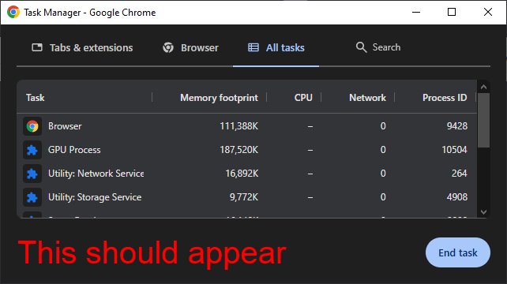
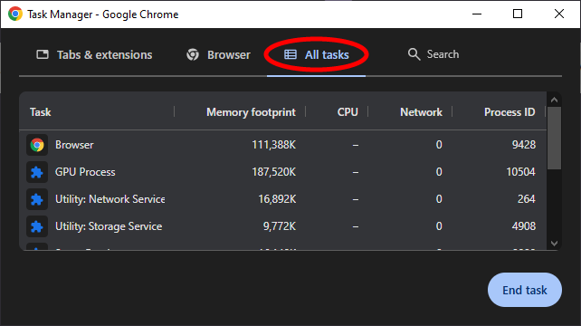
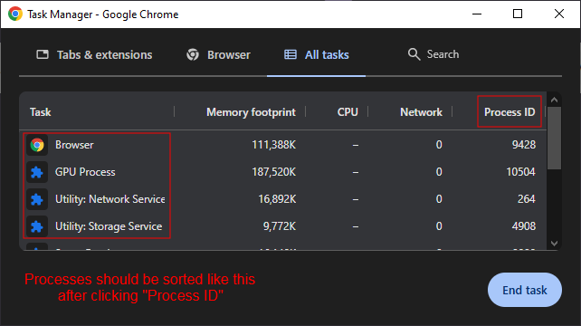
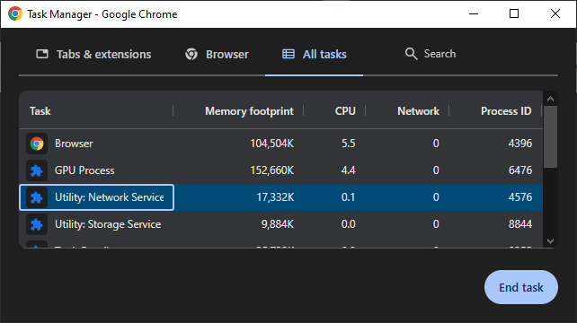
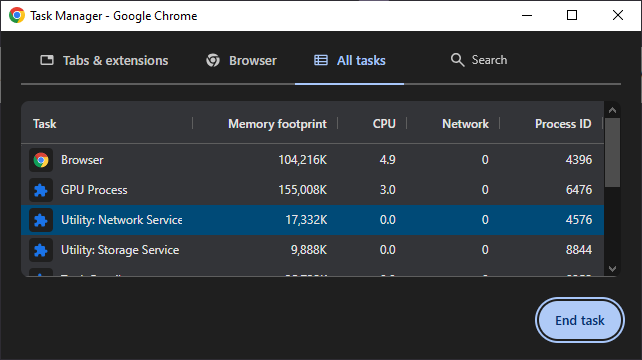

Your Chromebook must not be too fast (but also not too slow) to perform this exploit. Is this even an exploit?
Since around February of this year, I've been looking for ways to disable Lightspeed on my school Chromebooks ever since the patch of Blobby-Boi's LightSPED Killer Agent. I've only tried one method: flooding the filter with lots of spam.
That kind of worked, but I didn't want to make my Chromebook slower in turn for a somewhat working bypass.
However, in March, I've found an exploit on complete accident (which is this one). I wanted to share the exploit with a few of my classmates, but unfortunately I didn't remember the exploit well enough, and every attempt proved futile.
Fast forward a couple of days, and I've successfully replicated the exploit. I told one classmate how to do it, then they've tested it and it worked! I shared this exploit with a couple other classmates, and now I'm here to share it to you as well.
Before abusing this exploit, I advise you, the user, to not use this exploit with malice. It's not on me (Thyrocytes) if you ever get in trouble abusing this exploit.
Note that if the "End task" button is grayed out, then unfortunately this exploit will not work for you.




